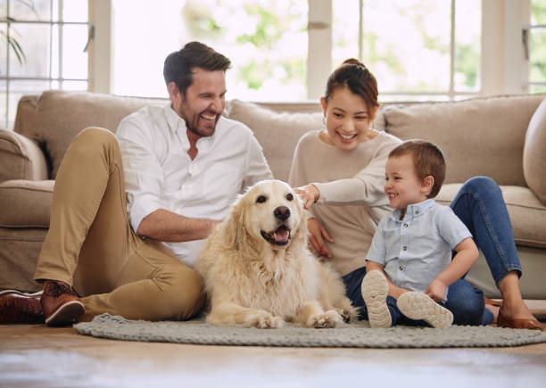
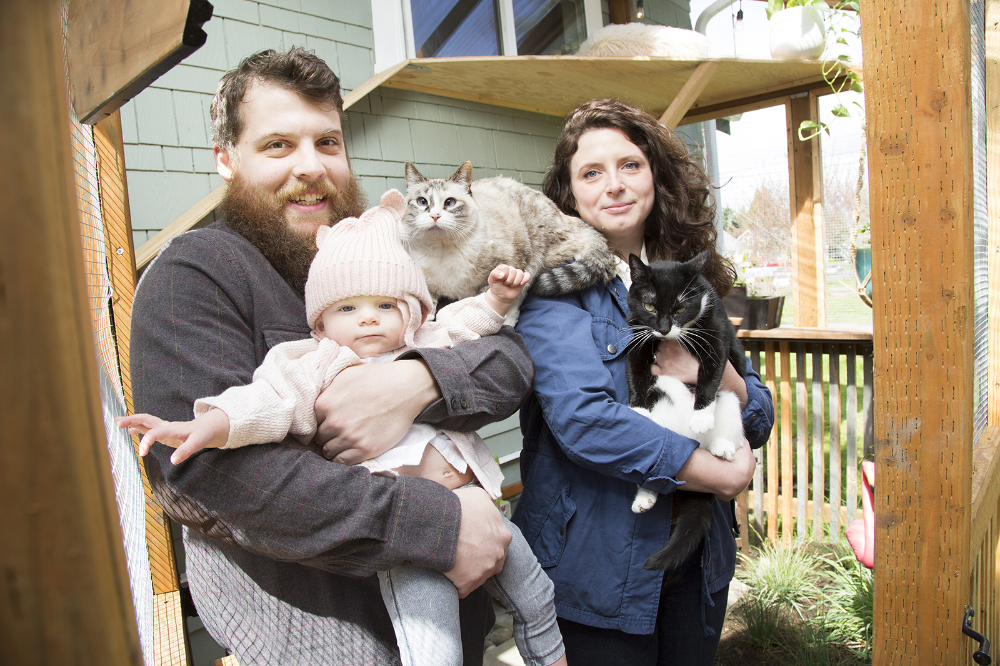

Our Story...
 

Tony, Kelly, and Cameron with their newest addition, Sasha
Brad, Natasha, and Lily with their newest additions, Cheeto and Klaus
Whoever you choose to adopt, you are giving them another chance at life!
Since November 2005, we dedicate our lives to saving and rescuing aimals at risk of being euthanized, promoting spaying/neutering, and finding homes for them. We are a "no kill" shelter, and many of our animals come from Animal Control Facilities. Our mission is to promote animal wellness through rescue and adoption, while also saving, rehabilitating, and finding animals a loving home. Each pet is spayed or neutered upon adoption, with the addition of being up to-date on their vaccinations! We have two locations in Akron, Ohio. So what're you waiting for? Come visit us and save a life today!
Adoption Center:
1929 West Market Street
Akron, OH 44313
(330) 865-6200
Hours of Operation:
Monday-Friday 12 p.m - 8 p.m.
Saturday 10 a.m - 8 p.m.
Sunday 12 p.m - 6 p.m.
Spay & Neuter Clinic
*Open to the public. Contact scheduling@oneofakindpets.com for more information.
1700 West Exchange Street
Akron, OH 44313
Hours of Operation:
Monday-Thursday 7:30 a.m - 5 p.m.
Friday by appointment only
All rescues must have an appointment!
See What Our Customers Have To Say About OOAKPR!
"I love OOAKPR!"
"A wonderful place to find a fur-ever friend!"
"Staff is so friendly and are so acknowledgeable! Will come back soon!"
"I love volunteering here!"
"Lots of friends here! Staff allowed us to go into a room with them so that we could interact with them. Process was quick and easy!"
One of A Kind Pets Rescue (©2005-2023)
All rights reserved. Made with Bootstrap 4.3 for WDD122